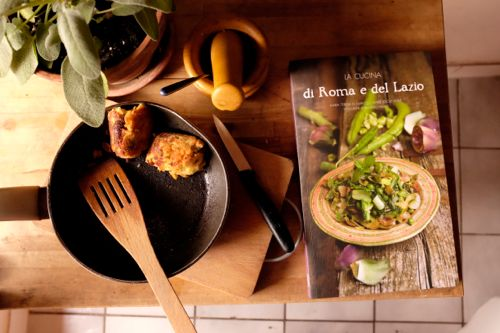

Sometimes I Cook

Lunch, sage, mortar, cookbook.
Sometimes, when it feels like my writing and editing are going nowhere, I wish I could give up and start over as a cook. But then, would cooking still be the pleasurable thing it is now—an escape from words and syntax and the pressures put (ridiculously) on what I create? Wouldn’t cooking then turn into the place that my writing becomes on bad days when I hold up the ruler and find myself coming up too short? Would meals turn into a nightmare of anxiety only alleviated by someone sitting down to eat, followed by a smile on their face? No, it’s better cooking remains the great escape.
I’ve been thinking about cooking a lot lately, probably because I blog for a food tour company here in Rome, and also because some weeks I end up feeding more than just Simon. Guests often moan when they eat and I feel that pleasing people could not be simpler (much simpler than pleasing them with a novel).
I’ve been thinking about how I’ve learned cooking, like I’ve learned writing, by trying and tasting and having a knack for combinations of ingredients. I think I’ve learned the most about cooking (besides from my mom, of course) from living in Italy. Italian cooking is exquisitely simple and completely dependent on the freshness of ingredients. If you can understand the importance of salt and olive oil, then it is easy to replicate.
This thinking about cooking led me to buy my first cookbook in over a decade, La Cucina di Roma e del Lazio, on recommendation from Rachel from Rachel Eats. I haven’t used it yet as cooking with a cookbook requires planning, but I hope to get it dirty over the weekend.
· · · · · · · · · · · · · · · · · · · ·